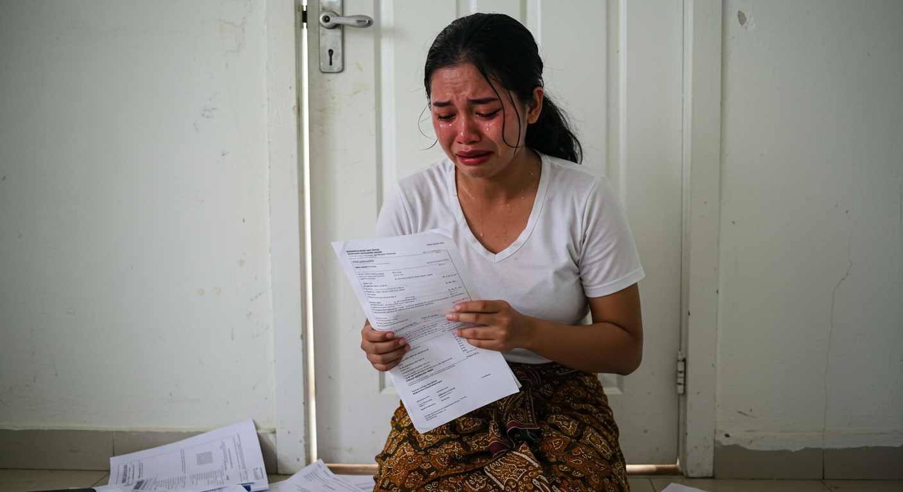

Mengapa Pengacara Perceraian Sangat Dibutuhkan?

Pendahuluan
Perceraian adalah keputusan besar yang melibatkan banyak aspek hukum, emosional, dan finansial. Tanpa pendampingan yang tepat, proses perceraian dapat menjadi lebih rumit dan melelahkan. Banyak orang berpikir bahwa mereka bisa menangani perceraian sendiri, tetapi kenyataannya, bantuan pengacara dapat membantu menyederhanakan proses dan melindungi hak-hak Anda.
Mengapa Memilih Pengacara untuk Perceraian?
1. Membantu Menyusun Gugatan Cerai dengan Tepat
Pengacara memastikan semua dokumen dan alasan hukum dalam gugatan cerai disusun dengan benar sesuai peraturan yang berlaku. Kesalahan kecil dalam penyusunan dokumen dapat memperlambat proses atau bahkan membuat gugatan ditolak oleh pengadilan. (Baca lebih lanjut di sini)
2. Melindungi Hak dalam Pembagian Harta Gono-gini
Salah satu masalah utama dalam perceraian adalah pembagian harta bersama. Dengan pengacara, Anda bisa mendapatkan hak yang seharusnya Anda miliki. Pengacara akan membantu dalam negosiasi agar pembagian aset dilakukan secara adil, sesuai dengan hukum yang berlaku. (Pelajari lebih lanjut di Fauzan Taufik)
3. Menjembatani Hak Asuh Anak
Jika ada anak dalam pernikahan, hak asuh sering menjadi perdebatan. Pengacara akan membantu Anda memperoleh hak asuh dengan mempertimbangkan kepentingan terbaik bagi anak, baik dari aspek finansial, psikologis, maupun pendidikan. Mereka juga dapat membantu menyusun perjanjian hak asuh bersama yang tidak merugikan salah satu pihak.
4. Menghindari Konflik yang Tidak Perlu
Dengan pengacara sebagai perantara, proses perceraian dapat berjalan lebih lancar tanpa konflik yang memperburuk kondisi mental dan emosional Anda. Pengacara akan bertindak sebagai mediator yang membantu kedua belah pihak mencapai kesepakatan dengan lebih tenang dan profesional.
5. Memastikan Keputusan Hukum yang Sah dan Mengikat
Putusan perceraian yang tidak ditangani dengan benar bisa menimbulkan masalah hukum di kemudian hari. Pengacara memastikan bahwa putusan pengadilan memiliki kekuatan hukum tetap dan dapat digunakan sebagai dasar hukum untuk aspek lain, seperti perubahan status kependudukan dan hak asuh anak.
Kesimpulan
Kami telah berpengalaman dalam menangani kasus perceraian di berbagai daerah, termasuk Jawa Tengah. Kami memahami setiap detail hukum yang perlu diperhatikan dan siap membantu Anda dengan profesionalisme. Jangan ragu untuk menghubungi kami melalui WhatsApp dan temukan solusi terbaik untuk perceraian Anda. Kami menyediakan konsultasi GRATIS untuk membantu Anda melewati proses ini dengan lebih mudah.